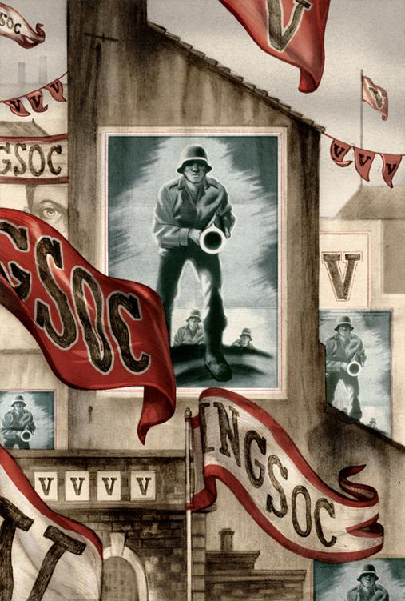

赛姆失踪了。一天早上他没来上班，当时还有几个没心眼的人提到此事，但到第二天，谁也没有再谈到他了。第三天，温斯顿跑到记录科前厅去看布告栏，其中一项是象棋俱乐部会员的名单，而赛姆是会员之一。这名单什么都没有改变——只是少了赛姆的名字。证据已充足了：赛姆已不存在。他从来也没有存在过。
天气热得怕人。真理部大厦虽然没有窗子，但有冷气，所以气温没有什么影响。但外面的走道热得令人脚板发烫，而上下班时间地铁车站的暑气与人体的汗臭熏人欲倒。仇恨周的筹备工作已进入高潮，各部门工作人员都得加班。游行示威、开会、军队操演、演讲、蜡像展览、纪录片放映、电幕节目，都得及时准备。此外还要搭楼台、制作要被烧被毁敌人的肖像、写标语口号、谱新歌、散布谣言和伪造照片等等。朱丽亚的子虚科，暂时不生产小说，集中制造描述敌人暴行的册子。温斯顿呢，除了固定的工作外，还得遍翻《泰晤士报》旧档，修饰将要为领导引用的新闻稿。到深夜时，爱凑热闹的无产者在街上逛来荡去，这个城市给人的就是一种奇异的如醉如痴的感受。火箭弹袭击的次数增加了。有时远处传来山崩地裂的爆炸声，可是究竟是什么爆炸了，大家都不清楚。大家听到的，只是谣言。
专为仇恨周制作的主题曲（名叫《天仇》）已经谱成，一天到晚在电幕上播送。音色野蛮、节奏粗野，实在不算音乐，只是鼓声的变调而已。乐起时千百个声音齐声呼喊，加上操演的步伐配音，真叫人毛骨悚然。可是无产者爱之有加，深夜在街头，《天仇》竟与《本来不存希望》分庭抗礼。柏森斯的两个孩子，夜以继日地用他们的梳子和厕纸含混吹奏着。温斯顿晚上的时间比以前更紧凑了。在柏森斯的领导下，成群结队志愿服务的人，忙着为迎接仇恨周而装饰街道：缝旗帜，贴招贴，在屋顶竖旗杆。他们也不考虑到危不危险，竟在街上两边房子间搭了铁线，用来悬挂长旗。柏森斯夸口说，单胜利大楼就有四百米长的旗布。搞这类活动，正中他的下怀。炎热的天气加上做粗活的需要，给了他晚上改穿短裤汗衫的绝佳借口。你跑到哪里都看到他的影子，推呀、拉呀、锯呀、捶呀的。他一会儿在这儿表演一下他权宜变通的长才，一会儿跟人家称兄道弟，要人加油。他身上厚得打褶的肌肉，看来都是流淌不尽的臭汗泉源。
新制招贴遍贴伦敦各地。这图片三四米高，上面是个手执冲锋枪、穿着巨型军靴、面无表情的欧亚国士兵。图片下并无说明。无论你从哪个角度看去，按照透视原理那个枪口都好像瞄着你准备随时发射。在伦敦街头，看到墙壁，就看到这蒙古脸的士兵，其出现的次数，比老大哥的肖像还要多。无产者一向对战争的态度冷淡得很，现在周期性的煽动就是要刺激他们的爱国情绪。好像为了配合敌忾同仇的气氛，火箭弹制造的伤亡也比以前大为增加。其中一个落在斯特尼戏院区，几百人就埋在那里。附近居民参加出殡的行列，走了好几个钟头。这葬礼也给了他们憎恨敌人的机会。另外一个则落在小孩玩耍的荒地，几十个孩子炸得血肉模糊。接着无产者就到街头泄愤示威了，焚烧戈斯坦的画像，把几百张撕下来的欧亚国士兵图片投入火中。也有人趁火打劫，到商店去抢东西。不久就有谣言传出，说这些火箭弹是间谍用无线电控制的。一对有外国血统嫌疑的老夫妇，房子被烧了，人也殉了葬。

只要找到机会，温斯顿和朱丽亚就到查林顿先生楼上的房子会面。天气热得难受，他们打开了窗子，扯下了毯子，脱光衣服并躺着。老鼠果然没再出现，可是臭虫在热天繁殖特快，多得令人恶心。这都无所谓了，干净也好，脏也好，这儿是天堂。他们一进来后，就把从黑市买来的胡椒在房子四边撒下，迫不及待地脱下衣服大汗淋漓地做爱，然后睡一觉。他们醒来后每见臭虫重整旗鼓，准备反攻。
六月中他们相会了四次，五次，六次——七次。温斯顿再没喝杜松子酒了，不再觉得有此需要。他体重增加，静脉曲张亦已痊愈，足踝的皮肤上只剩下一块褐色的疤痕。他早上的阵咳亦已停止。生活较前好受些，他已没有在电幕前做鬼脸或破口骂脏话的冲动。他们现在有了一个几乎可以说是家的会面地点，虽然不能常叙，虽然每次只能留一两个钟头，已觉于愿足矣。要紧的是这房子能够继续存在。只要它平安无事，就等于在那里长居一样。这房间是个给已绝了种的动物自由走动的史前遗迹。查林顿先生也是头绝了种的动物，温斯顿想。每次上楼前，他都会停下来跟这老先生聊几分钟。他好像很少出门，或根本不出门。也没见过有什么客人来。他好像幽灵一般生活着，活动的天地除了狭小黑暗的铺子外就是铺子后边那更狭小的厨房。除了烧饭的用具外，厨房还有一台古老的留声机，喇叭奇大。老头子很高兴有跟人说话的机会。长长的鼻子、厚厚的眼镜、天鹅绒的短上衣，半弯着背在废物堆中走来走去，他予人的印象不是生意人，而是艺术收藏家。每次看到温斯顿时，他就半热心地把一些破铜烂铁指给他看，像瓷器瓶子的塞子、破鼻烟盒子的漆盖、里面装着逝世多年的孩子头发的金色铜制饰盒或诸如此类东西。但他绝不是为了做生意，好像看到温斯顿也能欣赏到旧东西的价值自己也开心了。听这老先生谈话，感觉就像听古董八音盒子奏出的声音一样。令温斯顿高兴的是，他终于一点一滴地从查林顿先生模糊的记忆中学会了不少歌谣的片段。有一首是讲二十四只乌鸦的故事，另外一首讲的是一条母牛的角怎么弄弯了，还有一首是记述大公鸡罗宾之死。“我想你对这个有兴趣吧？”每次念出一个片段，老先生就不大有信心地笑了笑说。可惜的是，每首歌他能记得的也是一些零星的句子。
温斯顿和朱丽亚两人都清楚，这种日子不会维持多久。事实上他们心中一直有这个阴影。有时死亡的影子好像近在床前，随时要抓人的样子。每遇这种低潮，他们就拥得更紧，好像是判了死罪的犯人，在行刑前的五分钟拼命地把爱吃的东西塞到嘴巴去一样。但有时他们也有幻觉，不但觉得安全，而且相信目前的幸福永远也不会改变。他们觉得，只要走进这房间，别人就伤害不到他们了。走到这儿来既困难又危险，但一进了房间就仿如进了圣殿。这感觉就像温斯顿对着玻璃镇纸凝视时一样，他想自己可以走进这个玻璃世界，而一到了里面，时光就停顿了。他们不断地做着白日梦。说不定他们的运气绵延不绝呢？就这样可以偷偷摸摸地过一辈子。或者凯瑟琳突然死去，而他和朱丽亚用一些手段，最后顺利结婚。再不然就一同自杀吧。还有，他们双双失踪，改头换面之后再学无产者口音，然后到工厂去找工作，在冷僻的地区住下，不让别人认出身份，度过余生。这真是白日梦，他们太清楚了。在现实的环境中，他们是逃不了的。最实际的一个计划就是自杀，但他们不愿这样死去。有一天就活一天，有一星期就活一星期吧，凑合地过着毫无前途的日子。这是天性，自然得像肺的功能一样，只要还有一口空气，就吸一口空气。
有时他们的话题会岔到别的地方去，谈到怎样去参加反党的组织，但苦于不知从何入手。兄弟会即使存在，但请缨无路。温斯顿告诉朱丽亚他对奥布赖恩这个人所产生的亲切感。他说他当时几乎压不住心头的冲动，要走上前去对奥布赖恩招供：“我是党的敌人，请你帮助我！”令他觉得意外的是，她并不觉得这种想法鲁莽。她惯于鉴貌辨色，因此觉得温斯顿只凭奥布赖恩眉目的表情而判断他可以信赖，实在没有什么奇怪的。再说，朱丽亚深信几乎每个人私下都憎恨党，一有机会就破戒犯规，但她不相信大规模的叛乱组织可以存在。她说有关戈斯坦的事情和他的地下组织，全是党为了配合实际需要编造出来的。当然，你得合作，装出深信不疑的样子。她自己就不知有多少次，在党的大会和群众示威游行中，声嘶力竭地叫着要杀死一些她从未听过其名字的人。而他们究竟犯了什么罪，更是天晓得。遇到公审时，少青队人马总会日夜不停地包围着法院。她当然循例参加，喊着“把卖国贼碎尸万段”的口号。在“两分钟仇恨”节目里，她骂戈斯坦的话都比别人到家。可是戈斯坦究竟是谁，她一直搞不清楚，更不用说他代表什么理论了。她是革命中长大的一代，对五十和六十年代意识形态的斗争非常模糊。要参加一个与党作对的政治运动，在她说来简直不可思议。党是战无不胜的。它永远存在，而且永远这个样子。你要反抗可以，但只能采取阳奉阴违的方式，极其量也不过是搞些独立的暴力事件，如暗杀哪个头子或炸毁某些建筑物。
对某些事情，朱丽亚的观察力远比温斯顿的敏锐，也更不容易受党的宣传所左右。有一次他不知因为谈到了哪些问题而附带言及与欧亚国的战争，她竟然对他说，以她的看法根本没有什么战争，每天落在伦敦的火箭弹可能就是大洋邦政府自己发射的。为什么？让大家害怕呀！像这种看法他想也没有想过。更令他听来觉得羡慕的是，在“两分钟仇恨”节目里，她最大的困难就是忍着不笑出声来！但除非党的教训影响到她的生活，否则她是懒得去问根由的。她随时准备接受党颁布的神话，因为反正在她看来党所说的是真的也好假的也好，都没有什么分别。譬如说，她相信党发明了飞机，因为这从学校学来。（温斯顿记得五十年代念书时，党只说发明了直升机。十多年后朱丽亚上学，党已进一步发明了飞机。这样推算下去，下一代的孩子就会听说党发明蒸汽机的故事了。）温斯顿忍不住告诉她，在她诞生前飞机早就有了，早在革命前就存在了。她一点也没有表示诧异。反正，谁发明飞机还不是一样？令温斯顿最为震惊的，还是从谈话中得知她完全忘记四年前大洋邦交战的国家是东亚国，不是欧亚国。虽说她认为这些战争都是骗人的玩意儿，但总不能没注意到敌人名称的改变呵。“我一直以为我们打的是欧亚国。”她淡淡地说。他实在觉得害怕。飞机在她诞生前出现，印象模糊也难怪她。但大洋邦交战的对象，才在四年前变换的呵，那时她已二十多岁了。他跟她争论了十多分钟，最后总算唤起她模糊的记忆，想到有一个时期大洋邦的敌人果然是东亚国，而不是欧亚国。可是她始终认为这问题无关痛痒。“管他呢，”她不耐烦地说，“今天不是他妈的打这个就是打那个，而所有消息都是假话。”
有时他跟她讲他在记录科的工作，特别是他自己所做的不要脸的订正工作。这些事似乎也没有令她吃惊，显然没有吓到她。她并没有觉得谎言变为真理有什么可怕。接着他告诉她有关琼斯、阿诺逊和卢瑟福的事，也跟她说了自己怎样一度握有可以证明党改变历史的证据。她听说后也没有表示怎么惊奇。起先，她完全不明白这件事的要点。
“他们是你的朋友？”她问。
“不是，我从来不认识他们。他们是内党党员，比我年纪大多了。他们属于革命前那一代。我好不容易才认出他们来。”
“那有什么好担心的？杀人和被杀是天天有的事，对不对？”
他想尽办法要她明白此事的意义。“这是一个特殊的例子，并不是有人被杀那么简单。你晓不晓得从昨天倒数的历史都被毁灭？如果过去还存在的话，那只在少数几样无言的物体中看到，如我们眼前那块水晶玻璃。我们常常提到革命，但对革命的实况一无所知，更不用说革命前的岁月了。每一份相关记录，要不是焚毁就是篡改。每本书都经改写，每张图画都经重绘，雕像、街道和建筑物都换了名字，每个日期都随意修订。这种偷天换日、改头换面的工作，每天每分每秒都在进行着。历史停顿了。除了党永远是对的这一永恒的现在外，什么东西也不存在。我自己当然知道他们伪造历史，可是我永远也拿不出证据来，虽然我自己也是个伪史专家。文件经订正后，不留什么作弊痕迹。唯一的证据只存在于我脑袋中，而我也实在无法知道除我自己外还有没有别人分担我这种记忆。在我的一生中，只有那么一次在事后，在事情发生了多年以后，掌握过确实的改史证据。”
“那有什么用处？”
“没有用处，因为几分钟后我就把证据毁了。但此事如果今天发生，说不定我会留下来。”
“我才不干呢，”朱丽亚说，“我也肯冒险，但得有些价值，不会为一张旧报纸去玩命。对了，你要是把报纸留了下来的话，可能派什么用场？”
“很难说，但那最少是个证据。如果我当时有胆量拿去示人的话，可能会撒下一些令人对党生疑心的种子。我相信我们今生今世改变不了什么事情，但反抗的势力也许会在一些角落诞生。先是几个人集合，然后慢慢壮大，说不定因此留下一些记录，让后世的人继续我们未完成的工作。”
“我对后世没兴趣，我只关心我们。”
“你只有腰身以下的一半才算叛徒。”他对她说。
她听后想了想，觉得此话机智风趣不过，高兴得扑入他怀中。
她对党理论的枝节问题全不感兴趣。只要他一提到英社的原则、双重思想、历史的伸缩性、客观现实之否定，或只要他一用新语，她就显得不耐烦，茫然不知所措。她说她从不注意这些问题。既然都是废话，何必浪费心血？只要她知道在什么场合应该喝彩叫好、什么时候该臭骂一番，就已经够了。如果他不知趣还要硬着讲下去呢，她有出人意表的法宝：倒头呼呼大睡。她是什么时候什么姿势都可以倒头便睡的那种人。从跟她多次谈话得来的经验，他知道要在她面前装腔作势地摆出一副思想正确的模样（虽然摆姿态的人自己也不真的了解思想正确是什么意思），一点也不困难。实话说，最易接受党的世界观的，就是那些对此一窍不通的人。稍经诱导，这些人就可以接受歪曲得最离谱的事实，因为他们从没想过要为此付出多大代价。另一方面，他们对世事也冷淡得很，从不注意身边以外发生了什么事。糊涂也有好处，最少他们不会疯掉。你告诉他们什么，他们就相信什么。而他们吞下去的东西，不留渣子，因此对他们没有害处，正如小鸟口中的一粒玉米不经咀嚼就吞下肚子一样。